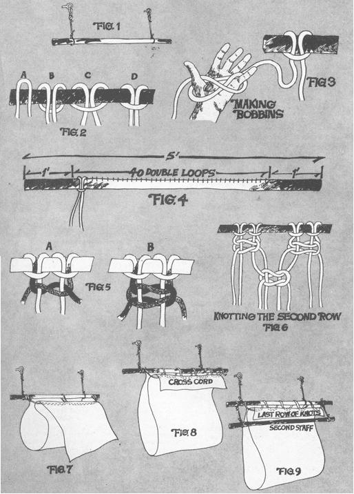
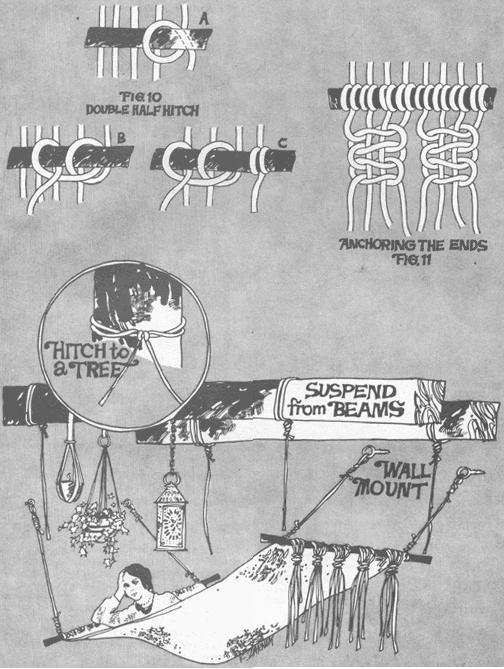

Macrame Your Own Hammock
You can make a macrame hammock from the simplest of ingredients: two poles for the ends, cord for the middle and two eyebolts or some extra rope with which to hang the finished work of art.
By Emily Rownd
July/August 1972
Living in balmy Ibiza, Spain calls for a lazy, comfortable bed ... and when I first moved here (up in the mountains overlooking the Mediterranean), I decided to make myself the laziest, most comfortable bed of all by macrameing my own hammock. The project was quite simple, very inexpensive and a lot more fun than buying a cot, couch or four-poster. The steady day-and-night uses to which I've put my handiwork since it was finished have also been a far greater creative joy than I'd expected.
Living with a fish net hammock is really fun when you arrange places to hang it both inside and out ... so you can spend your days under big shady trees and your nights floating above the day's accumulated clutter. A sling bed is also super-great in a small apartment or single room because there's so much completely open floor space under the hammock for storing belongings or for use as extra sleeping area for a friend. During the day the piece of flexible furniture can be used as a storage rack ... or magically transformed into a decorative tent by merely attaching its middle to the ceiling in a few places. Furthermore, a hammock is also a wonderfully convenient piece of warm weather camping gear: it's easy to pack and lets air circulate all around you when you sleep ... while keeping you out of reach of the creepy-crawlies and up off the cold, damp ground. When it rains you can just pull a canvas tarp over you so that it extends down past the sides of your aerial resting place ... and the water will drain right off, leaving you snug inside.
MATERIALS
You can macrame a hammock from the simplest of ingredients: two poles for the ends, cord for the middle and two eyebolts or some extra rope with which to hang the finished work of art.
I wanted my hammock to look earthy so, for the poles, I cut two tree branches that were each five feet long, 2½ to 3 inches in diameter, moderately straight, smooth and strong enough to hold all the weight I figured I'd ever want to load onto the finished bed. It doesn't matter whether you scrounge, make or buy wooden or metal poles for your hammock ... just make sure that the ones you use are heavy enough and about two feet longer than you expect the width of the finished fish net bed to be.
Your rope or cord should be thin, strong and slip-proof (so that when you tie a knot, it stays tied). Hemp, jute and cotton twines or light ropes are all very good but, while nylon is both thin and strong, it doesn't hold a firm knot without a lot of coaxing.
I chose hemp cord (the size I used shows three separate groups of fibers when you unroll a section) because it's thin enough to tie easily, the knots hold well and it's relatively inexpensive (a 200 meter roll cost me 50 pesetas, or about 75 cents). For my hammock, I used six rolls or 1,200 meters (about 1,310 yards) or $4.50 worth of the twine. By the way, don't worry about trying to measure out your cord to the exact yard be cause you're going to have a lot of excess footage on the ends of the macraméd hammock when you're done.
Some of that excess, of course, can be braided into sturdy (it's better to make them too heavy rather than too light!) and ropes for hanging the finished bed ... or you can buy substantial stantial eyebolts and solidly mount a set in each location that you expect to suspend your hammock.
THE BEGINNING
Macramé is the craft of tying a string or strings together again and again to produce a large or small, strong and often decorative, fish net-type structure. The process is quite simple and easy and - for a hammock - you'll need to use only the most basic knots.
Start your hammock by hanging one of the two poles or branches flat against a wall, a little above eye level and parallel to the floor. If you firmly secure two eyebolts in the wall and suspend the pole by two ropes tied to its ends and fastened to the bolts, your beginning hammock will resemble a trapeze at this point (see Fig. 1).
If the finished sling bed will be hung permanently where you make it, right now is an excellent time to test the strength of pole, ropes and bolts. Get a friend and - together - grab the branch, do chin-ups and bounce on it. Try anything you can think of to make sure that the pole won't break and the anchors won't pull out of the wall. An exhaustive test now is much better than a rude awakening later, in the middle of the night.
Now cut the cord for the body of the hammock into 40 lengths of 32 yards each. Fasten every string - at its midpoint - to the pole by doubling the strand and bringing the loop it makes underneath the branch and back to the front where the long ends of the cord can be pushed down through the loop (see Fig. 2). Tighten and snug the first doubled string ... and then stop!
At this point (with only one cord looped around the stick) you may already have an inkling of how incredibly easy it would be to hopelessly tangle 80 separate tails (each 32 yards long!) ... so we're going to take care of that problem before it has a chance to develop.
What we're going to do is coil each long, ungainly tail into a neat and compact bobbin. Start by curling the first string around and around the thumb and little finger of one hand in a "Figure-8" pattern (as shown in Fig. 3) until you only have a yard or so of twine left. Then tie up the bobbin - so it won't fall apart - with the yard-long free end.
Repeat the bobbin-making process with the second string from the first loop ... then attach all the other cords to branch one-by-one and shorten them into double bobbin you go along.
You should finish this first step in making your hammock with 40 double loops (80 separate strings and bobbins) evenly spaced across the middle three feet of your five-foot long pole (see Fig. 4). The foot or so of "empty" space on either end of the branch is your guarantee that none of the cords will slip off the staff. You're ready to start knotting.
THE SQUARE KNOT
The easiest and surest knot for your hammock is the same good old dependable square knot that you've been making all your life ... except that every one you tie on this project is going to have two "extra" cords running through its middle (see Fig. 5). Don't panic. It's actually very simple.
Let's start with the first four strings (the first two double loops) on the left end of the pole. Separate the two outer cords from the two inner ones (to make it even easier, let's call the far left string of the quartet "black", the far right one "gray" and the two middle ones "white" ... as shown in Fig. 5).
Take the gray cord on the right and place it over the middle two white strings. Then run the black twine over the part of the gray cord that's to the left of the two middle strings, under the middle white strings and out over the gray cord on the right side. Now, keeping the two center strings straight, pull the gray and black cords up into a firm knot. You're half done.
Finish the square knot by doing the opposite of your first step. Take the black twine (that's now to the right of center) and run it under the two middle white strings, heading back home. Then thread the gray cord (still on the left) under the black twine, over the two white strings and under the black twine (going toward the wall) on the right. Pull both the gray and black cords up firmly as you hold the two white strings straight ... and you've completed your first square knot. Now tie the same knot in each group of four cords all the way across the branch.
The second row of knots is tied exactly the same way, except that they're staggered to fall between the knots on the first row (see Fig. 6). Nothing to it: just skip the initial two strings when you begin Row No. 2, and make your first knot with the next four cords after that. In each knot of the second row, the left-hand string will be the old middle-right cord, the two middle cords will be old gray and black strings and the right-hand cord will be a middle-left string from the row above. Forget the two "untied" cords on each end of Row 2 ... let them hang and work them into the third row of knots.
By the by ... if your branch or pole is slightly bent, every row of knots should have the same slight irregularity until you stretch the hammock straight at the bottom.
The rest of the hammock should be a whiz. Just remember to keep the knots firm and the rows straight with each other and far enough apart so the bed will have a little "give".
When you have to begin stooping to work, run an extra piece of cord through the hammock and tie its ends and middle to the branch (see Fig. 7) to bring your working area back up to a comfortable level.
Make the sling bed anywhere from 5 to 7 feet long (depending on how long you are). The hammock will stretch, so don't go overboard on length ... or you'll find yourself kissing your toes while your rear bumps the ground!
If you find the last row of knots uneven as you finish off the bed, work the end of the hammock off square, knot by knot.
ATTACHING THE SECOND POLE WITH A DOUBLE HALF HITCH
When your hammock is as long as you want it, you'll finish the bed by tying all 80 cords around the second branch (after testing it for strength the way you tested the first pole).
To make this job a third row of knots up from the bottom of the hammock and tie the cross-cord to the top branch at several points so that the last row of knots is hanging down flat at a handy working level (see Fig. 8).
Now hang the bottom pole up parallel to the last row of knots so that you can macramé it to the hammock. Tie this pole to the top crosspiece with extra cord so that the second staff is parallel to the floor, balanced and close enough to the last row of knots so that those knots will almost reach the second pole when you tug on the cords (see Fig. 9).
You'll be using a new knot, called the double half hitch, to fasten the macraméd body of the hammock to its second pole (see Fig. 10). Begin this operation by laying the staff across all the cords as explained above. Then bring the first cord on the right up from underneath, around the pole and back down othe right side of the main body of the cord. Next, draw the twine up from underneath and over the pole a second time. . but on this pass carry it to the left of the main cord and threa it down through the loop you've just formed (as shown in Fig. 10). Draw the main part of the cord tight and then snug down, the finished half hitch.
Tie an identical half hitch in the next cord and continu working your way left until you've knotted every twine to the second staff and all the ends of string are hanging evenly from the pole.
At this point it's a good idea to stretch the hammock our firmly to check it for "square" and evenly distributed tautness. When you're satisfied that the finished piece is as good as you can make it, you should anchor the cords of the bed to the second pole once and for all so that there's absolutely no chance that they can work loose.
This final anchoring is accomplished with the aid of our old friend, the square knot. Grasp the first four cords on the left (sound familiar?) and tie two or three square knots, one right after the other. Then tie two or three square knots in the next, four cords (see Fig. 11) and continue on, knotting four cords at a time, until you reach the end of the row of strings.
Cut the cords off as long as you like. I clipped mine to a length of about two feet, divided the strings into five groups and tied each section with a big overhand knot. Approximately a foot of extra twine hangs wisely out of each bundle.
HANGING THE HAMMOCK
You can suspend your sling bed from the eyebolts mentioned earlier, work out something with ropes and trees or hang the big fish net couch from ceiling beams. Whatever, allow in advance for more weight than you ever expect the bed to hold. This hammock is roomy for one person and will hold two or more if you all wrap around each other. Just make sure your new piece of aerial furniture is fastened securely enough to hold you, your friends and any added stress and strain it p e called on to handle.
For a final touch, throw a colorful Persian rug or a deep-pile fur across your hammock ... or string beads on it (wax or glue the cord tips, pinch the ends small enough to thread through the decorations and let the twine dry). An air mattress over the knots adds comfort and - for sheer playful luxury when you stretch out - you can suspend hanging candles, potted plants incense holders, mobiles, toys or bowls of fruit over your aerial bed.
And don't forget to hang that hammock in the best spot you can find. I have mine slung between two trees high on a hill from which I enjoy a commanding view of the Mediterranean can far below.
 ISTOCKPHOTO/MARK TREESE Using a few simple knots, you can make your own hammock! |
 |
 |